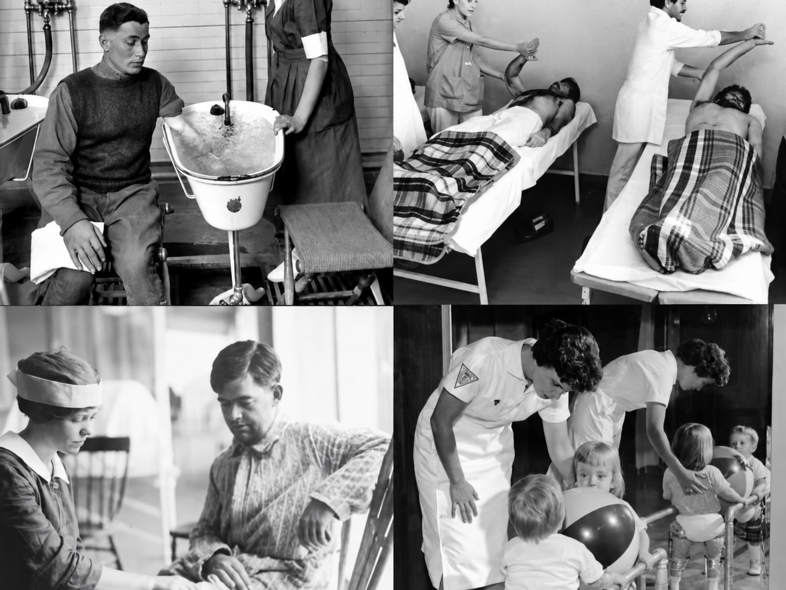

Revisão Acadêmica
Tudo o que você precisa para revisar antes da prova. Aqui você encontra resumos da história da profissão e fundamentos essenciais, flashcards para memorizar mais rápido e um simulado completo de NP1 e NP2.
Começar EstudoEntenda como a profissão nasceu, cresceu e quais são as leis que a regulamentam hoje.

A Fisioterapia é a ciência que estuda o movimento humano. Seu objetivo é prevenir doenças, promover a saúde e reabilitar quem está lesionado, usando recursos físicos como luz, calor, frio, eletricidade e exercícios.
O Símbolo: são duas serpentes verdes (representando sabedoria e conhecimento) entrelaçadas em um raio dourado (energia e recursos físicos aplicados com consciência).
A cor oficial da profissão é o verde, que simboliza saúde e vitalidade.
Dica de prova: se cair a definição de Fisioterapia, lembre-se sempre das palavras-chave: movimento, prevenção, promoção e reabilitação.
Antiguidade: gregos, egípcios e chineses já utilizavam água (hidroterapia) e massagem para fins terapêuticos. Hipócrates descreveu técnicas de manipulação e exercícios.
Idade Média: representou um retrocesso. O corpo humano era visto como algo "pecaminoso", o que prejudicou o avanço das ciências da saúde.
Séculos XIX e XX – O grande salto: as duas Guerras Mundiais e as epidemias de poliomielite foram os principais marcos. Milhares de feridos e crianças paralisadas precisavam de reabilitação urgente, o que impulsionou a organização da profissão.
A Segunda Guerra Mundial gerou uma grande demanda por reabilitação de amputados e lesados medulares, consolidando a fisioterapia como profissão indispensável nos países aliados.
1951: surgem os primeiros cursos técnicos de fisioterapia no Brasil, com duração de 1 ano, ligados à USP (Universidade de São Paulo). O objetivo era suprir a demanda gerada pela epidemia de poliomielite.
1963: a profissão é reconhecida como de nível superior após pressão das epidemias de pólio e do aumento de acidentes de trabalho na industrialização brasileira.
1969: o Decreto-Lei nº 938/69 regulamenta definitivamente a profissão em nível superior — é a "certidão de nascimento" da Fisioterapia no Brasil.
Dica de prova: o Brasil seguiu o mesmo caminho do mundo: demanda por reabilitação pós-guerra e pós-poliomielite forçou a profissionalização.
As três leis mais cobradas em prova:
Atualização 2026 — Acórdão COFFITO nº 735/2024: o fisioterapeuta agora tem autonomia definitiva para prescrever medicamentos e insumos necessários ao tratamento e realizar procedimentos invasivos não cirúrgicos (agulhamentos, injetáveis).
A Anamnese é a entrevista inicial. O fisioterapeuta pergunta sobre a queixa principal, o histórico da doença e os hábitos de vida do paciente.
Durante a avaliação, os sinais vitais devem ser aferidos obrigatoriamente: pressão arterial, frequência cardíaca, frequência respiratória e temperatura. A dor é o 5º sinal vital.
O Diagnóstico Cinesiológico Funcional é a identificação de disfunções do movimento — diferente do diagnóstico médico (focado na doença). Ele é a base da autonomia profissional do fisioterapeuta.
Recursos básicos:
Conheça as áreas de atuação e os principais recursos usados na prática clínica.
O paciente deve estar com o mínimo de roupa possível. O fisioterapeuta usa o simetrógrafo (quadro quadriculado) e o fio de prumo.
A avaliação é feita em três planos: de frente, de costas e de lado.
Principais alterações a identificar:
TENS (Estimulação Elétrica Transcutânea): focado em analgesia (alívio da dor). Bloqueia impulsos nervosos dolorosos. Indicado em dores crônicas como artrose e dores pós-cirúrgicas.
FES (Estimulação Elétrica Funcional): usado para provocar contração muscular em músculos que perderam o controle motor. Indicado em pacientes pós-AVC ou com lesão medular.
Dica de prova: TENS = dor / FES = músculo fraco ou paralisado.
Calor (Termoterapia): promove a vasodilatação, o que relaxa os músculos e melhora a circulação sanguínea. É indicado principalmente em fases crônicas.
Frio (Crioterapia): promove a vasoconstrição, auxiliando na redução do inchaço e da inflamação. É indicado nas primeiras 48 horas de uma lesão aguda.
Dica de prova: lesão aguda = gelo. Lesão crônica ou antes do exercício = calor.
Hidroterapia: feita em piscina aquecida entre 32°C e 34°C. O empuxo reduz o peso corporal na água, facilitando o movimento e diminuindo o impacto articular. A pressão hidrostática auxilia no retorno venoso e reduz edemas.
Massoterapia: não é apenas relaxamento — o objetivo é mobilizar tecidos e melhorar a circulação. Técnicas principais:
Toque nos cards abaixo para revelar a resposta e testar sua memória imediata.
Qual lei criou o COFFITO e os CREFITOs?
Lei nº 6.316/1975.
COFFITO: Leis federais. (nacional)
CREFITOs: Fiscalização regional.
Qual é a diferença entre TENS e FES?
TENS = Alívio da dor (analgesia).
FES = Contração do músculo (fortalecimento/reabilitação).
Qual decreto regulamentou a Fisioterapia como profissão de nível superior no Brasil?
Decreto-Lei nº 938/1969.
É a "certidão de nascimento" da profissão.
Questões de NP1 e NP2 nos moldes de avaliações universitárias de Fisioterapia.